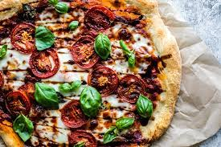

Recipe for Balsamic Pizza

Here is how to make a delicious balsamic pizza. Here are the steps to make one of your own.
Here is what you will need
- Pizza Dough
- Tomatos
- Basil
- Mozzerella Cheese
- Balsamic Viniger
- Brown Sugar
- Preheat oven to 400*
- Mix balsamic viniger and brown sugar into a sauce pan and bring to boil. Lower to simmer for 10 min or untill thickened.
- Rollout and precook dough for 5 minutes.
- Top with cheese and sliced tomatos.
- Bake untill desired crispiness.
- Drizzle balsamic sause and serve immidiately.